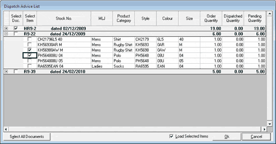

The Dispatch Advice List window is as shown.

Select the checkbox under Select Doc. to select the dispatch advice document.
In case you need to select a few items from the dispatch advice document, click the + sign on the left of the corresponding document. All items in the document are listed. Select the checkbox under Select Item to specify the required items in the dispatch advice document.
Select All Documents: Click to consider all the listed dispatch advice documents for reference. Items for transfer out can be selected from any or all of these documents. You may deselect a few documents by deselecting the corresponding Select Doc. checkbox.
On clicking Select All Documents, the button changes to Unselect All Documents, enabling cancellation of document selection in one click.
Load Selected Items: By default, this is selected indicating that all selected items shown in the grid will be loaded. Deselect, if you want to scan stock numbers against the selected dispatch advice documents.